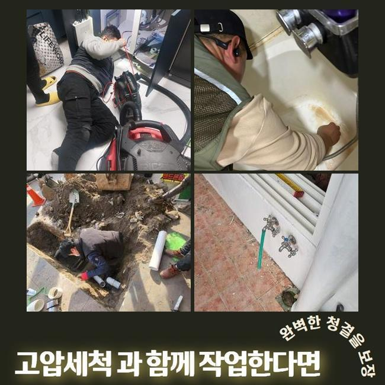
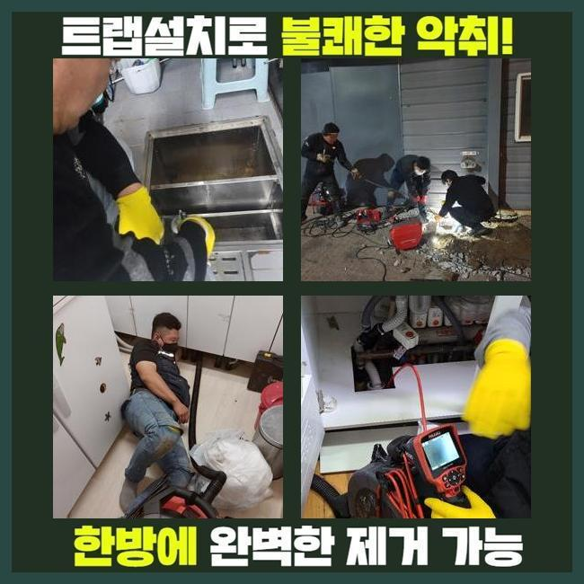
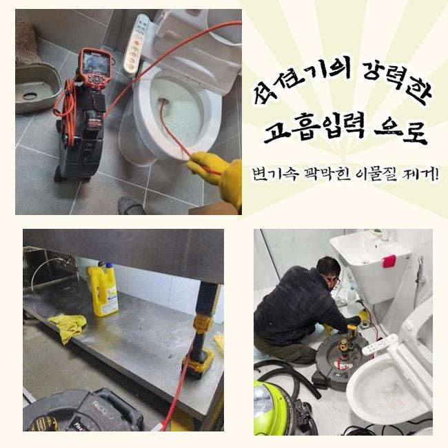
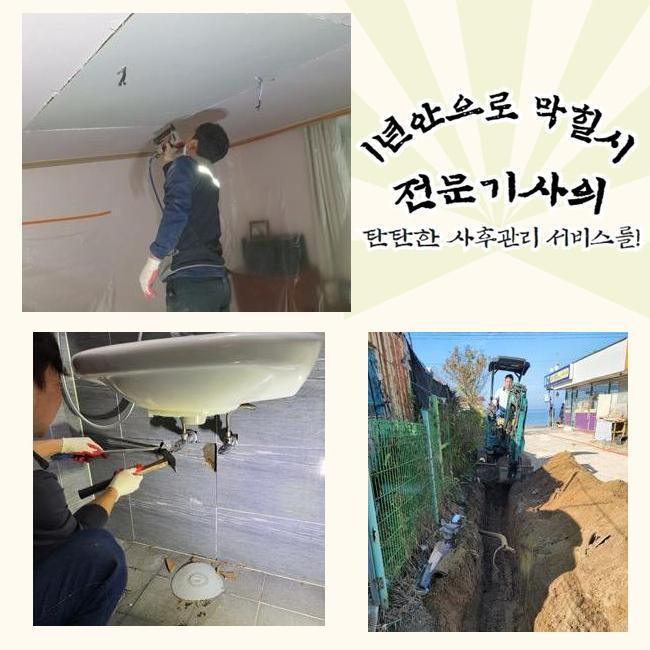
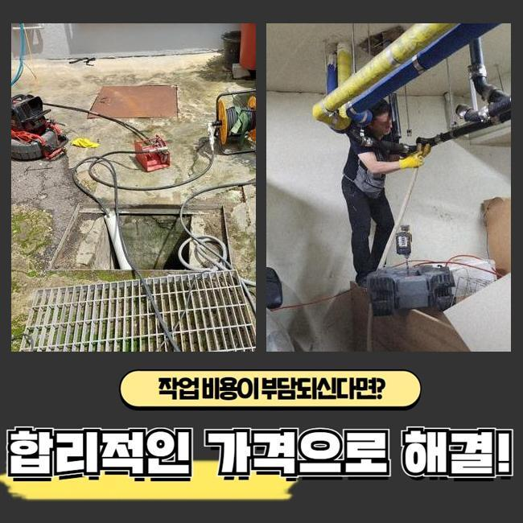
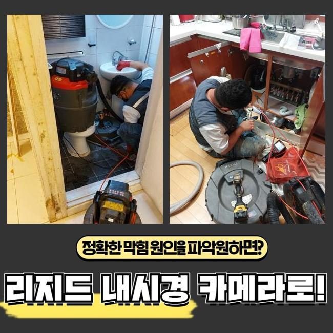
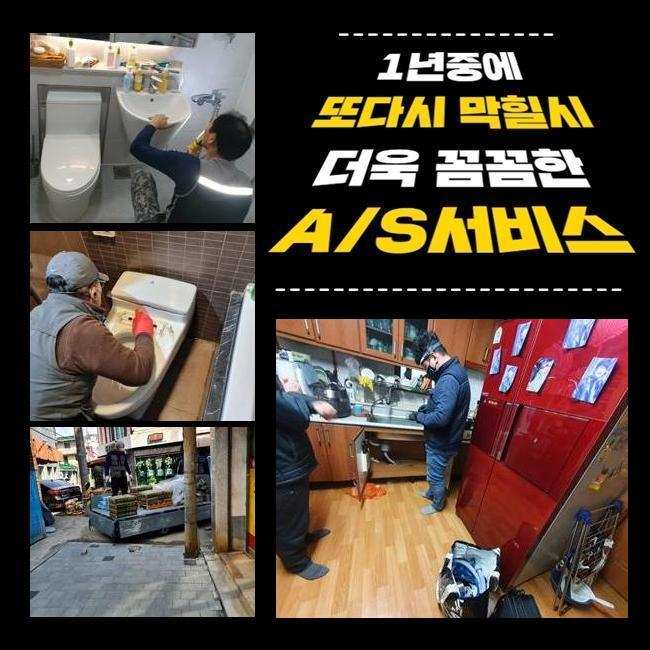

🏠 신천동대변기뚫음 정왕2동 하수관고압세척 설비업체
용인 변기막힘 전문 시공 후기

📋 작업 개요
- 위치: 용인
- 서비스 유형: 변기막힘, 하수구막힘, 배관막힘, 집수정막힘, 누수수리, 역류해결, 뚫는업체, 배관청소, 고압세척, 악취차단
- 작업 일시: 2024. 12. 17. 17:38
- 업체명: 하수구수사대 (010-5615-2118)
🔍 문제 상황
신천동대변기뚫음 정왕2동 하수관고압세척 설비업체
설치가 완료된 하수관에서 잘못된 점이 생겨서 하수구 고장이 연속된다는 급한 전화를 받고 이러한 상황을 탁월하게 고쳐드릴 수 있도록 오늘의 장소를 찾아갔어요
집안 하수관의 마비는 생활에 큰 트러블을 만들 수 있으므로 재빠르면서도 정확히 바로잡아야 합니다
처리를 후일로 미루면 문제가 더 커질 수 있으니 소극적으로 지켜만보지 말고 활발하게 작업에 착수하는 것이 긍정적인 변화를 만들어요
오늘 작업한 장소는 공동주택 한 곳에서 하수구 속이 차단되었고 욕실 바닥 쪽에 있는 배수구에서 물이 범람하는 사태를 경험하신 고객님이 개선해줄 수 있냐고 연락주셨어요
불현듯 나타난 물 막힘때문에 어찌할 바를 모르고 뚫는 활동을 조금씩 해보다가 결국 저희를 찾아주신 겁니다
고쳐야 할 작업지에 가서 문제를 탐사하는 기기를 써서 조사에 착수했습니다
역시나 욕실의 바닥에서는 물이 흘러서 제거되지 않고 역류가 생겨서 바닥 위에 높은 깊이로 물이 잔뜩 고여있었어요
이런 물사태가 화장실 안에만 고여있었던 것이 아니라 물기가 스며든 범주가 확산이 되어버렸습니다
수도꼭지가 설치되어 있는 세면대 근방에서도 물이 흘러 넘쳤기 때문에 바닥까지 축축해지게 됐고 문턱의 높이까지 차서 거실에 깔린 장판까지 물로 오염이 된겁니다

🔎 원인 분석
💡 전문가 진단: 정밀 진단 장비를 사용하여 슬러지의 고착 여부를 판명하고 타격/세척 작업을 실시했습니다.
욕실의 내부 구조에서 일어난 막힘 문제는 물이 범람되게 만들어서 거주하시는 분들께 어려움을 만들고 말았습니다
이 문제를 고쳐드릴 수 있도록 제일 먼저 이루어져야할 일은 정확히 상황을 진단하고 통합적인 배관 시스템을 보는겁니다
이러한 막힘은 가벼운 이물질의 침투로 빚어지는 일반적인 막힘 사례도 있지만 망가진 관로라거나 연결부의 안정성과 같은 갖가지 사유들이 두루 막힘을 생성하기도 합니다
이런 기초조사를 거쳐보니 이 장소는 낱개 배관들이 한 관로로 모여들어서 집수정으로 이동하게 되는 구조라고 볼 수 있었습니다
이와 유사한 구조들은 통수되는 물 통로가 좁아진다면 배수로 막힘이 더욱 쉽게 도래되므로 사전에 조사하여 대비책을 세워야합니다
대부분의 배수관 안에는 떨어져나간 각질이나 머리카락 또한 여러 생활 오염물들이 상당한 양이 모여 있어서 하수의 일반적인 처리를 이뤄지지 못하게 훼방놓고 있었어요
오류가 생겨난 정황에 대해 자세하게 안내해 드리고 내부를 정비하는 본 작업으로 장애를 타개할 수 있는 솔루션을 상세설명해 드렸습니다
작업할 화장실 플로어에 응집된 하수를 덜어내는 단계부터 실시했습니다
물이 모두 사라지고 노출된 배관 속을 자세히 살펴봤더니 석회질과 기름 찌꺼기가 다수 쌓여있다는 점을 감지할 수 있었습니다
진흙처럼 뭉치는 기름과 석회는 정상적인 물의 방출을 가로막기도 하지만 오래 묵으면 그만큼 딱딱한 고체가 되어 철저한 관로의 차단을 낳을 가능성이 있습니다
따라서 경미한 단계의 내부 정화 작업으로는 호전이 되기 힘들기에 관로 스케일링을 받아서 누락된 곳 없이 맑게 정화해야 원기능이 돌아옵니다

🔧 작업 과정
관로의 소통을 위해서 많은 상황 속에서 채택하는 플렉스 샤프트 기기를 돌리기 시작했습니다
이 샤프트는 체인 노커가 빙글빙글 돌며 관로 안에 접착된 기름 찌꺼기들을 효율적으로 제거하게 됩니다
강한 힘으로 뭉친 슬러지와 석회층처럼 관로 벽에서 잘 떨어지지 않는 물질들을 잘게 쪼개어 기존의 모습으로 정상화하는 데 두드러진 전문기기입니다
유연한 몸체와 단단한 노커로 끈적거리는 기름기도 세분화하고 거대한 덩어리도 파편화하여 배수로를 다시금 뚫어주는 과정을 거쳤습니다
스케일링을 마친 이후에도 우리는 단단히 잘못된 설비를 없앴는지 점검하기 위해서 확인차 카메라를 주입했습니다
본 내시경 장비는 배관의 안쪽을 명확하게 시각적으로 보여주는 도구로 깊숙한 영역까지 살펴보게 하니 정밀한 데이터 수집이 됩니다
청소를 마치고 본 내시경 기계로 배관의 생김새를 확인을 해보았더니 초반과는 180도 다르게 결점없이 청결해진 게 보였습니다
지켜보시던 고객님께도 이를 제시해 드리면서 애로사항이 모조리 나아졌다고 알려드렸습니다
어떤 도구를 접목해야 더 맑은 내부로 재생할 수 있을지에 대해서 충분히 고심한 뒤에 셀렉을 합니다
상황이 힘들면 종합적으로 기계를 돌리기도 하며 이 내역에 대해 승인을 구합니다
모든 단계가 마무리 되고서 정확도를 위해 추가적으로 물이 원만히 나가는지 관찰했습니다
수도꼭지를 풀로 오픈해서 정상 속도로 물이 폐기되는지 체크를 해봤더니 화장실과 주방 모두 잔량없이 빠져나갔으며 이어진 관로를 거쳐서 옥외 집수정으로 향하는 현황을 확인하게 됐습니다
하수 장애의 기본적인 요소를 처단한 후에도 원래 영위하던 정상적인 일상으로 돌아가실 수 있게끔 현장도 다듬어드리고 있습니다
작업이 끝난 현장까지 세심하게 마감 처리하고 더이상 불편하지 않으시게 끝처리까지 최선을 다합니다
하수관의 마비는 그 부분만 해도 곤란하지만 차일피일 미룬다면 더욱 심각한 일까지 퍼져나갈 위험이 있습니다
물샘이 찾아오거나 다른 세대까지도 피해를 증가시킬 수 있으니 빠른 조치가 요구됩니다
한 파트만 청소해 준다고해서 전반적인 에러가 수정되는 상황은 아니므로 누락되는 부분없이 깨끗하게 치워드리고 있어요


✅ 작업 완료
하수구는 없어서는 안 되는 장비이다 보니 지체하지 않고 수리하는 자세가 필요해요
노화된 시설이라면 계획적으로 배관진단을 의뢰해서 세심하게 봐줘야만 쾌적한 기능을 유지할 수 있어요
놓친 찌꺼기가 없는지 끝까지 주시하면서 작업을 마쳤으니 향후 발생하는 배수 장애는 경험하지 않으실 것입니다
설비에 대한 질문도 마음이 편해지실 때 까지 받아서 의문을 해소해 드리며 관리 조언까지 첨언합니다
현장마다 다른 하수구 문제를 말끔하게 처리해 드리겠으니 언제든 편하실 때 거리낌 없이 전화주세요




⚠️ 베란다 누수 및 방수 관리 방법
- ✅ 비가 많이 올 때 창틀 주변이나 아래층 천장에 얼룩이 생기는지 정기적으로 확인해 보세요.
- ✅ 우수관 주변 실리콘 마감이 들뜨거나 깨진 틈새가 있는지 손상 여부를 수시로 체크하세요.
- ✅ 베란다 바닥 타일의 줄눈(메지)이 소실되면 그 틈으로 물이 침투하여 누수가 유발됩니다.
- ✅ 누수 의심 증상 발견 시 방치하면 아래층 손실이 커지므로 즉시 전문가의 진단을 받으십시오.
💡 핵심 정리
- 확실한 장비 작업(내시경 점검 및 샤프트 스케일링)으로 원인을 뿌리 뽑습니다.
- 작업 후 1년 이내에 동일한 부위 재발 시 100% 무상 A/S 서비스를 보장합니다.
- 서울 · 경기 · 인천 전 지역에 24시간 언제든 긴급 출동할 수 있도록 항시 대기 중입니다.
❓ 자주 묻는 질문 (FAQ)
🚨 용인 변기막힘 문제로 고민이신가요?
정확한 원인 진단과 확실한 시공으로 재발 없는 해결을 약속드립니다.
24시간 긴급 출동 | 서울 · 경기 · 인천 전지역 | 1년 내 재발 시 무상 A/S